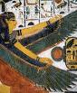
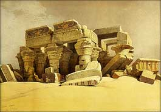

|
Courrier des Lecteurs
2010 - saison 2/3
|
|
 |
6/4/2010 - L.M.
Vernir l'aquarelle
cdl cdl cdl
Navigation, sommaire
thématique
cliquer ici
Dialogue antérieur -
Dialogue suivant
|
|
LM :
Supportant de plus en plus difficilement
l'obligation de protéger les aquarelles par une vitre en raison des
problèmes de reflets, mais aussi du poids du verre qui limite la
dimension des oeuvres et cantonne ce médium dans des petits et moyens
formats, j'ai cherché à substituer la vitre habituelle
par un vernis (.../ et) je m'interroge par honnêteté vis-à-vis d'éventuels acquéreurs de
poursuivre (...).
C'est la raison pour laquelle je me permets de vous consulter (...)
sur la formule employée (...) :
1) Première couche :
a) vernis aquarelle mat X. Appliqué au
pinceau (composition : résines synthétiques, essence de pétrole,
agents de matité : silicate)
Ou :
b) fixatif mat Y. Spray (composition :
résines d'acrylates incolores non jaunissantes.)
|
|
[note :
l'eau est également un solvant et son action
sur
la
gomme arabique, l'ensemble de la
couche picturale et le papier n'est pas anodine.
Un solvant stable à
temps de séchage plus rapide ne serait
pas à dédaigner.] |
|
|
|
2) Deuxième couche : vernis Z mat, à
base de résines polyuréthanes sous forme aqueuse, sans solvant, ne
s'écaille pas, ne jaunit pas.
(Fabricant : X).
Merci de bien vouloir (...) me faire
connaître le cas échéant les frais inhérents à cette étude.
|
|
|
|
|
Dtp :
C'est une question cruciale car elle implique pour ainsi dire l'avenir de
l'aquarelle. En effet, les dimensions et la vitre protectrice fixent
directement les limites de l'utilisation de cette peinture dans la
production artistique contemporaine. Limites plutôt étroites à ce
jour, et pourtant déjà connues depuis l'époque vénérable des premières
peintures égyptiennes (nous y reviendrons). Les excellents peintres
britanniques des XVIII et XIXème siècles venus sur les
sites pharaoniques s'y sont d'ailleurs heurtés eux aussi.
Ce questionnement vient par ailleurs littéralement en
écho au précédent courrier, d'autant plus
qu'il s'agit pour moitié du même fabricant.
|
|
L'avenir de
l'aquarelle
 |
|
| |
Il y a en effet, là aussi, de quoi être perplexe au sujet de
descriptions aussi floues que "résines
synthétiques, (...) silicates", ce qui n'a pratiquement
aucune valeur informative.
|
|
|
|
| |
C'est un peu comme si votre boulanger vendait
ses baguettes sous l'intitulé de "matière farineuse avec un peu
de sel". Avec un tel argument, vous
voilà bien avancé.
De toute façon, avec ce type de produits
"ultra-customisés" (des chimies polymériques
précisément ajustées aux cahiers des charges), le problème ne réside
pas entièrement dans la composition car celle-ci peut être tout aussi
peu informative pour l'utilisateur final. Par excès.
Mais alors, à quoi sert le travail réalisé
en amont par
l'industriel lui-même pour définir son concept de produit ?
Ne peut-il parler clairement à l'acheteur potentiel de ses objectifs
et des limites qu'il a fixées à la substance qu'il envisage de lui
vendre ?
Faut-il que Dotapea crée son laboratoire d'analyse pour tenter
laborieusement de répondre à une légitime question d'artiste alors que
les industriels ont tous les éléments et toutes les bonnes raisons pour ce faire ?
|
|
Matière farineuse
avec un peu de sel |
|
| |
A fortiori dans le cas d'un produit
aussi peu académique qu'un vernis à
l'aquarelle, qui fait naturellement naître de sérieux questionnements
tels que le vôtre, c'est aux fabricants de rassembler leurs souvenirs
et de prendre la plume pour rassurer les utilisateurs, la presse, les
enseignants, les historiens de l'art et les archéologues (que l'on
imagine incrédules sur un sujet pareil), en nous en disant plus sur la
rupture dans l'histoire de l'art qu'ils nous proposent.
Ceci n'est pas ironique : l'avenir de
l'aquarelle est un sujet éminemment sérieux. Et il se trouve bien en
prise directe avec les questionnements concrets que vous soulevez à
juste titre. Comment se débarrasser de la vitre
et comment passer à l'échelle supérieure ?
Evidemment, la solution réside dans le
vernis et ce n'est vraiment pas un "scoop". Le vernis a
malheureusement manqué dès les premières peintures égyptiennes,
celles-là mêmes qui se sont abîmées au premier coup de soleil après les
désensablements opérés par les Britanniques. Tant abîmées qu'il a
fallu convoquer d'excellents peintres du royaume (l'un des plus connus
est Howard Carter mais on peut citer également sur un plan beaucoup
plus artistique l'extraordinaire travail de David Roberts, auteur d'un
oeuvre aussi fascinant qu'intemporel) pour fixer non sur la pellicule
mais sur le papier ces oeuvres en perdition, avec... de l'aquarelle.
|
|
Un rappel :
en principe,
on ne vernit pas l'aquarelle.
Lire passage in
La gomme arabique, l'aquarelle |
|
| |

"Ruins of temple of Kom
Ombo", 1838,
David Roberts
|
|
|
|
| |
C'est donc là un très, très vieux et
très, très récurrent problème qui n'a jamais cessé de préoccuper les
peintres.
|
|
|
|
| |
Le premier conseil de Dotapea sera donc
de questionner ces fabricants. S'ils ne savent pas vous répondre,
c'est à désespérer de tout. Refaisons un détour par le pétrin : un
boulanger qui a fabriqué de A à Z un pain révolutionnaire espéré
au long de millénaires de recherches boulangères devrait tout naturellement
savoir en parler. S'il vous marmonne timidement trois mots confus
(matière... farine... sel, comme résine... synthétique... silicate),
c'est qu'il y a un problème : est-il un grand timide ou ignore-t-il
radicalement de quoi il parle ? C'est de l'incommunication que
part le soupçon.
Notre second conseil est de suivre
de très près une invention toute fraîche
dite « verre liquide »
que nous avons récemment évoquée dans un article de la section
« hi-tech ». Lien.
Il y a peut-être là de quoi
révolutionner vraiment l'univers des vernis et par-delà, l'avenir de
certains procédés de peinture de premier plan tels que l'aquarelle.
Sincèrement merci beaucoup, Mr. L.M., de
votre intervention qui permet de mettre en perspective des enjeux
apparemment très mal compris à ce jour.
|
|
La timidité peut avoir
un charme mais
on ne peut qu'encourager
les fabricants à parler de leurs recherches, de leurs travaux, de
leurs produits, afin - si c'est possible - de combler un hiatus qui ne
fait que nourrir légitimement les angoisses et les suspicions. |
|
Retour
début de page
|
|

 Communication
Communication
|